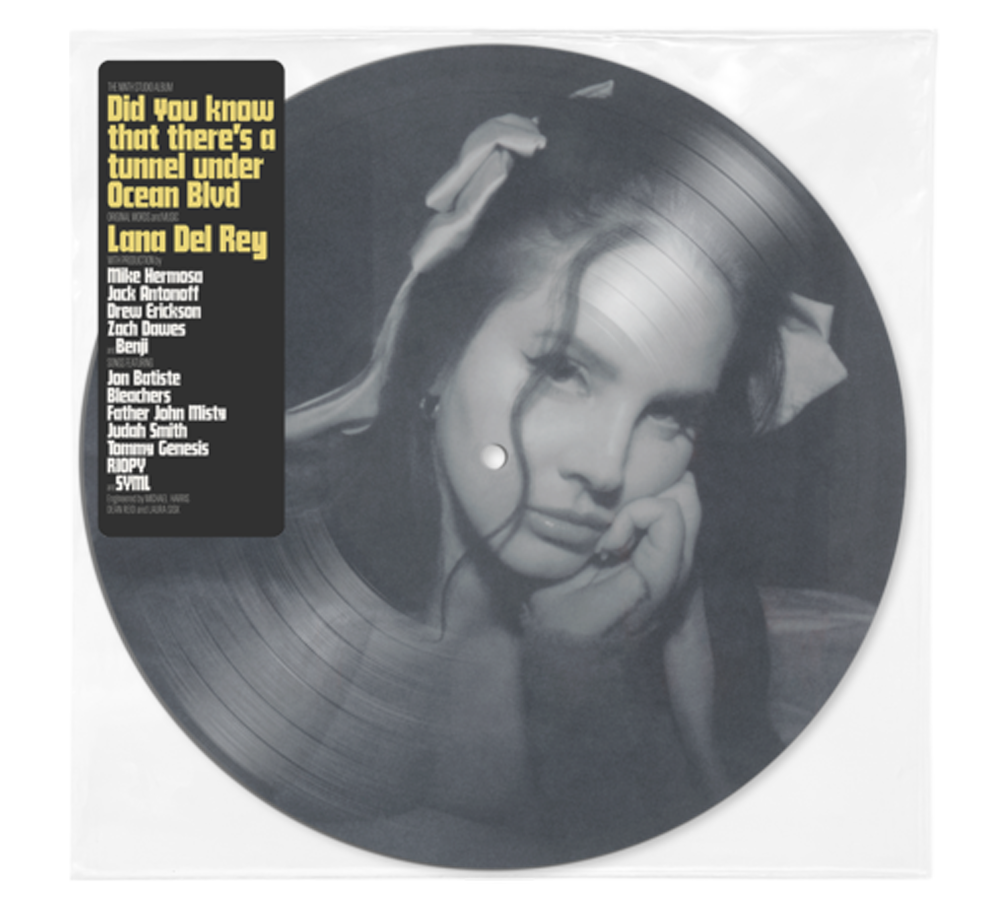
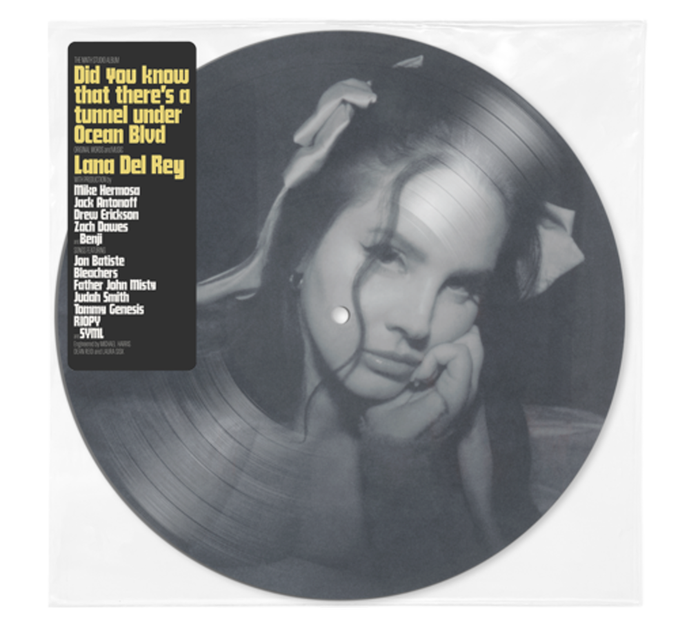

Elizabeth Woolridge Grant (born June 21, 1985), known professionally as Lana Del Rey, is an American singer-songwriter. Her music is noted for its cinematic quality and exploration of tragic romance, glamour, and melancholia, with frequent references to contemporary pop culture and 1950s–1970s Americana. Her vintage Hollywood glamour aesthetic is presented not only in her music, but also in her music videos. She is the recipient of various accolades, including an MTV Video Music Award, three MTV Europe Music Awards, two Brit Awards, two Billboard Women in Music, and a Satellite Award, in addition to nominations for eleven Grammy Awards and a Golden Globe Award. Variety honored her at their Hitmakers Awards for being "one of the most influential singer-songwriters of the 21st century". Rolling Stone placed Del Rey on their list of the 200 Greatest Singers of All Time (2023), and Rolling Stone UK named her The Greatest American Songwriter of the 21st century (2023).
Career
2005–2010: Career beginnings and early recordings
In spring 2005, while still in college, Del Rey registered a seven-track extended play with the United States Copyright Office; the application title was Rock Me Stable with another title, Young Like Me, also listed. A second extended play, From the End, was also recorded under Del Rey's stage name at the time, May Jailer. Between 2005 and 2006, she recorded an acoustic album, Sirens, under the May Jailer project, which leaked on the internet in mid-2012. At her first public performance in 2006 for the Williamsburg Live Songwriting Competition, Del Rey met Van Wilson, an A&R representative for 5 Points Records, an independent label owned by David Nichtern. In 2007, while a senior at Fordham, she submitted a demo tape of acoustic tracks, No Kung Fu, to 5 Points, which offered her a recording contract for $10,000. She used the money to relocate to Manhattan Mobile Home Park, a trailer park in North Bergen, New Jersey, and began working with producer David Kahne. Nichtern recalled: "Our plan was to get it all organized and have a record to go and she'd be touring right after she graduated from college. Like a lot of artists, she morphed. When she first came to us, she was playing plunky little acoustic guitar, [had] sort of straight blonde hair, very cute young woman. A little bit dark, but very intelligent. We heard that. But she very quickly kept evolving. Del Rey graduated from Fordham with a Bachelor of Arts degree in philosophy in 2008, after which she released a three-track EP, Kill Kill, as Lizzy Grant, featuring production by Kahne. She explained: "David asked to work with me only a day after he got my demo. He is known as a producer with a lot of integrity and who had an interest in making music that wasn't just pop."Meanwhile, Del Rey was doing community outreach work for homeless individuals and drug addicts; she had become interested in community service work in college, when she "took a road trip across the country to paint and rebuild houses on a Native American reservation". Of choosing a stage name for her feature debut album, she said: "I wanted a name I could shape the music towards. I was going to Miami quite a lot at the time, speaking a lot of Spanish with my friends from Cuba—Lana Del Rey reminded us of the glamour of the seaside. It sounded gorgeous coming off the tip of the tongue." The name was also inspired by actress Lana Turner and the Ford Del Rey sedan, produced and sold in Brazil in the 1980s. Initially she used the alternate spelling Lana Del Ray, the name under which her self-titled debut album was released in January 2010. Her father helped with the marketing of the album, which was available for purchase on iTunes for a brief period before being withdrawn in April 2010. Kahne and Nichtern both said that Del Rey bought the rights back from 5 Points, as she wanted it out of circulation to "stifle future opportunities to distribute it—an echo of rumors the action was part of a calculated strategy". Del Rey met her managers, Ben Mawson and Ed Millett, three months after Lana Del Ray was released, and they helped her get out of her contract with 5 Points Records, where, in her opinion, "nothing was happening". Shortly after, she moved to London, and moved in with Mawson "for a few years". On September 1, 2010, Del Rey was featured by Mando Diao in its MTV Unplugged concert at Union Film-Studios in Berlin. The same year, she acted in a short film, Poolside, which she made with several friends.
2011–2013: Breakthrough with Born to Die and Paradise
In 2011, Del Rey uploaded self-made music videos for her songs "Video Games" and "Blue Jeans" to YouTube, featuring vintage footage interspersed with shots of her singing on her webcam. The "Video Games" music video became a viral internet sensation, which led to Del Rey being signed by Stranger Records to release the song as her debut single. She told The Observer: "I just put that song online a few months ago because it was my favorite. To be honest, it wasn't going to be the single but people have really responded to it." The song earned her a Q award for "Next Big Thing" in October 2011 and an Ivor Novello for "Best Contemporary Song" in 2012. In the same month, she signed a joint deal with Interscope Records and Polydor to release her second studio album Born to Die. She started dating Scottish singer Barrie-James O'Neill in the same year. The couple split in 2014 after three years together. Del Rey performed two songs from the album on Saturday Night Live on January 14, 2012, and received a negative response from various critics and the general public, who deemed the performance uneven and vocally shaky. She had earlier defended her spot on the program, saying: "I'm a good musician ... I have been singing for a long time, and I think that [SNL creator] Lorne Michaels knows that ... it's not a fluke decision." Born to Die was released worldwide on January 31, 2012, to commercial success, charting at number one in 11 countries and debuting at number two on the US Billboard 200 album chart, although critics at the time were divided. The same week, she announced she had bought back the rights to her 2010 debut album and had plans to re-release it in the summer of 2012 under Interscope Records and Polydor. Contrary to Del Rey's press statement, her previous record label and producer David Kahne have both stated that she bought the rights to the album when she and the label parted company, due to the offer of a new deal, in April 2010. Born to Die sold 3.4 million copies in 2012, making it the fifth-best-selling album of 2012. In the United States, Born to Die charted on the Billboard 200 well into 2012, lingering at number 76, after 36 weeks on the chart. As of February 3, 2024, Born to Die has spent 520 weeks (10 years) on the Billboard 200, making Del Rey the second woman to reach this milestone, previously achieved only by Adele. In September 2012, Del Rey unveiled the F-Type for Jaguar at the Paris Motor Show and later recorded the song "Burning Desire", which appeared in a promotional short film for the vehicle. Adrian Hallmark, Jaguar's global brand director, explained the company's choice, saying Del Rey had "a unique blend of authenticity and modernity". In late September 2012, a music video for Del Rey's cover of "Blue Velvet" was released as a promotional single for the H&M 2012 autumn campaign, which Del Rey also modeled for in print advertising. On September 25, Del Rey released the single "Ride" in promotion of her upcoming EP, Paradise. She subsequently premiered the music video for "Ride" at the Aero Theatre in Santa Monica, California, on October 10, 2012. Some critics panned the video for being allegedly pro-prostitution and antifeminist, due to Del Rey's portrayal of a prostitute in a biker gang. Paradise was released on November 12, 2012, as a standalone release, as well as Born to Die: The Paradise Edition, which combined Del Rey's previous album with the additional eight tracks on Paradise. Paradise marked Del Rey's second top 10 album in the United States, debuting at number 10 on the Billboard 200 with 67,000 copies sold in its first week. It was also later nominated for Best Pop Vocal Album at the 56th Annual Grammy Awards. Del Rey received several nominations at the 2012 MTV Europe Music Awards in November and won the award for Best Alternative performer. At the Brit Awards in February 2013, she won the award for International Female Solo Artist, followed by two Echo Award wins, in the categories of Best International Newcomer and Best International Pop/Rock Artist. In June 2013, Del Rey filmed Tropico, a musical short film paired to tracks from Paradise, directed by Anthony Mandler. Del Rey screened the film on December 4, 2013, at the Cinerama Dome in Hollywood. On December 6, the soundtrack was released on digital outlets.
2014–2016: Ultraviolence, Honeymoon, and film work
On January 26, 2014, Del Rey released a cover of "Once Upon a Dream" for the 2014 dark fantasy film Maleficent. Following the completion of Paradise, Del Rey began writing and recording her follow-up album, Ultraviolence, featuring production by Dan Auerbach. Ultraviolence was released on June 13, 2014, and debuted at number one in 12 countries, including the United States and United Kingdom. The album, which sold 880,000 copies worldwide in its first week, was preceded by the singles "West Coast", "Shades of Cool", "Ultraviolence", and "Brooklyn Baby". She began dating photographer Francesco Carrozzini after he directed Del Rey's music video for "Ultraviolence"; the two broke up in November 2015 after more than a year. Del Rey described the album as being "more stripped down but still cinematic and dark", while some critics characterized the record as psychedelic and desert rock-influenced, more prominently featuring guitar instrumentation than her previous releases. Later that year, Del Rey contributed the songs "Big Eyes" and "I Can Fly" to Tim Burton's 2014 biographical film Big Eyes. Honeymoon, Del Rey's fourth studio album, was released on September 18, 2015, to acclaim from music critics. Prior to the release of the album, Del Rey previewed the track "Honeymoon", the single "High by the Beach", and the promotional single "Terrence Loves You". Prior to the release of Honeymoon, Del Rey embarked on The Endless Summer Tour in May 2015, which featured Courtney Love and Grimes as opening acts.[110] Additionally, Del Rey co-wrote and provided vocals on the track "Prisoner" from the Weeknd's Beauty Behind the Madness, released on August 28, 2015. In November 2015, Del Rey executive produced a short film Hi, How Are You Daniel Johnston, documenting the life of singer-songwriter Daniel Johnston. For the film, she covered Johnston's song "Some Things Last a Long Time". In November 2015, Del Rey received the Trailblazer Award at the Billboard Women in Music ceremony and won the MTV Europe Music Award for Best Alternative. On February 9, 2016, Del Rey premiered a music video for the song "Freak" from Honeymoon at the Wiltern Theatre in Los Angeles. Later that year, Del Rey collaborated with the Weeknd for his album Starboy (2016), providing backing vocals on "Party Monster" and lead vocals on "Stargirl Interlude". "Party Monster", which Del Rey also co-wrote, was released as a single and subsequently reached the Top 20 on the Billboard Hot 100 and was certified double-platinum in the US.
2017–2019: Lust for Life and Norman Fucking Rockwell!
Del Rey's fifth studio album, Lust for Life, was released on July 21, 2017. The album was preceded by the singles "Love"; "Lust for Life" with the Weeknd; "Summer Bummer" with A$AP Rocky and Playboi Carti; and "Groupie Love", also with Rocky. Prior to its release, Del Rey commented: "I made my first 4 albums for me, but this one is for my fans and about where I hope we are all headed." The record further featured collaborations with Stevie Nicks and Sean Ono Lennon, marking the first time she has featured other artists on her own release. The album received generally favorable reviews and became Del Rey's third number-one album in the United Kingdom, and second number-one album in the United States. On September 27, 2017, Del Rey announced the LA to the Moon Tour, an official concert tour with Jhené Aiko and Kali Uchis to further promote the album. The tour began in North America during January 2018 and concluded in August. Lust for Life was nominated for Best Pop Vocal Album for the 60th Grammy Awards, marking Del Rey's second nomination in the category. In January 2018, Del Rey announced that she was in a lawsuit with British rock band Radiohead over alleged similarities between their song "Creep" and her song "Get Free". Following her announcement, legal representatives from their label Warner/Chappell denied the lawsuit, as well as Del Rey's claims of the band asking for "100% of the song's royalties". Del Rey announced that summer while performing at Lollapalooza in Brazil the lawsuit was "over". Throughout 2018, Del Rey appeared as a guest vocalist on several tracks by other musicians, including "Living with Myself" by Jonathan Wilson for Rare Birds (2018), "God Save Our Young Blood" and "Blue Madonna" by Børns for Blue Madonna (2018), and "Woman" by Cat Power for Wanderer (2018). In November 2019, Del Rey was announced as the face of Gucci's Guilty fragrances and subsequently appeared in print and television advertisements with Jared Leto and Courtney Love. The campaign was centered around the concept of "Hollyweird". Gucci creative director Alessandro Michele said Guilty is a scent for a woman who does whatever she wants; Del Rey stated she is "very much that person". On August 6, 2019, Del Rey presented filmmaker Guillermo del Toro with his star on the Hollywood Walk of Fame and subsequently released a cover of "Season of the Witch" for his film, Scary Stories to Tell in the Dark. On the same day, Del Rey released the non-album single "Looking for America", which she spontaneously wrote and recorded earlier that week in response to back-to-back mass shootings in El Paso and Dayton. Her sixth studio album, Norman Fucking Rockwell!, was released on August 30, 2019. Having announced the album in September 2018, the album was preceded by the singles "Mariners Apartment Complex", "Venice Bitch", "Hope Is a Dangerous Thing for a Woman like Me to Have – but I Have It", and "Doin' Time", as well as the joint-single "Fuck It, I Love You"/"The Greatest". The album received widespread critical acclaim, and, according to review aggregator website Metacritic, is the best-reviewed album of Del Rey's career to date. NME awarded the album five out of five stars. In his review for Rolling Stone, Rob Sheffield wrote "the long-awaited Norman Fucking Rockwell is even more massive and majestic than everyone hoped it would be. Lana turns her fifth and finest album into a tour of sordid American dreams, going deep cover in all our nation's most twisted fantasies of glamour and danger," and ultimately deemed the album a "pop classic". The album was nominated for two Grammy Awards, Album of the Year and Song of the Year, for its title track. Norman Fucking Rockwell! marked the first time Del Rey worked with Jack Antonoff, who co-wrote and produced much of the album; Antonoff later worked with Del Rey on her following studio album and spoken word album. In September, Del Rey was featured on a collaboration with Ariana Grande and Miley Cyrus titled "Don't Call Me Angel", the lead single of the soundtrack for the 2019 film Charlie's Angels. The song was moderately successful internationally and was later certified Gold in several countries. In November, Del Rey appeared in the Amazon Prime special The Kacey Musgraves Christmas Show, alongside guests such as Camila Cabello, James Corden, and Troye Sivan.
2020–2021: Chemtrails over the Country Club, Blue Banisters, and poetry collections
In an interview for L'Officiel's first American edition in early 2018, when asked about her interest in making a film, Del Rey responded she had been approached to write a Broadway musical and had recently begun work on it. When asked how long it would be until completion of the work, she replied, "I may finish in two or three years." She also announced she would be contributing to the soundtrack of a new adaptation of Alice's Adventures in Wonderland. After announcing a spoken word album in 2019, Del Rey released Violet Bent Backwards over the Grass and its corresponding spoken word album in 2020. The physical book was released on September 29 and the Jack Antonoff-produced audiobook on July 28. The spoken word poem "LA Who Am I to Love You" was released as the lead single the day before the album's release. In May 2020, Del Rey announced a second book, Behind the Iron Gates – Insights from the Institution, which was originally planned to be released in March 2021; her progress on the book was lost when the manuscript was stolen from her car in 2022. In September 2020, Del Rey was featured on a remix of Matt Maeson's 2019 song "Hallucinogenics". The duo had previously performed the song together live in 2019. In November 2020, Del Rey announced that she would release a digital record composed of "American standards and classics" on Christmas Day, though it has yet to be released. The record features several songs recorded with Nikki Lane. The same month, she contributed to a documentary about Liverpool F.C., The End of the Storm, where she performed the club's anthem, "You'll Never Walk Alone". Del Rey also released the cover as a limited-edition single, with all profits going to the LFC foundation. Del Rey is known to be a fan of the club, and has attended matches at Anfield. In December 2020, it was reported that she was engaged to musician Clayton Johnson. On March 19, 2021, Del Rey released her seventh studio album, Chemtrails over the Country Club, to critical acclaim. Announced in 2019, the album was originally slated for release in 2020 under the title White Hot Forever but was postponed in November 2020 due to a delay in vinyl manufacturing. Like Norman Fucking Rockwell!, Chemtrails over the Country Club was mostly produced by Del Rey alongside Jack Antonoff. It was preceded by the singles "Let Me Love You like a Woman" on October 16, 2020, and the title track on January 11, 2021. Music videos were released for both songs as well as "White Dress". Her eighth studio album, Blue Banisters, was released on October 22, 2021. It was preceded by the simultaneous release of three songs on May 20, 2021: the title track, "Text Book", and "Wildflower Wildfire", as well as the release of the single "Arcadia" on September 8, 2021. A music video was released for "Arcadia" on September 8, 2021, with an alternate music video for the track released on October 7, 2021. A music video for the track "Blue Banisters" was released on October 20, 2021.
2022–present: Did You Know That There's a Tunnel Under Ocean Blvd and Lasso
On January 21, 2022, Del Rey premiered a song titled "Watercolor Eyes" on an episode of Euphoria. Del Rey confirmed in 2022 she had been working on new music and poetry; however, on October 19, 2022, she posted a series of videos to her Instagram revealing her car was burgled "a few months" prior, and her backpack—containing a laptop, hard drives, and three camcorders—was stolen, giving thieves access to unfinished songs, a 200-page manuscript of her upcoming poetry book Behind the Iron Gates - Insights from an Institution, and two years' worth of family video footage. Del Rey erased the stolen laptop's contents remotely, which contained the only working copy of her poetry book. "Despite all of this happening, I am confident in the record to come", Del Rey concluded in her Instagram videos. On October 21, 2022, Del Rey was featured on "Snow on the Beach" by Taylor Swift, on her album Midnights, written by Swift, Del Rey, and Jack Antonoff. The song debuted at number 4 on the Billboard Hot 100, becoming Del Rey's highest-peaking entry on the chart. On December 7, 2022, Del Rey released "Did You Know That There's a Tunnel Under Ocean Blvd" as the lead single from her ninth studio album of the same name. In January 2023, Del Rey was photographed by Nadia Lee Cohen and interviewed by Billie Eilish for the cover Interview's March issue. In the interview, Del Rey revealed that the album would explore her innermost thoughts and that some of the songs on the album are "super long and wordy". On February 14, 2023, "A&W" was released as the second single from the album and, a month later, on March 14, 2023, the third single of the album, "The Grants", was released. Did You Know That There's a Tunnel Under Ocean Blvd was released on March 24, 2023. On May 19, 2023, Del Rey released her popular unreleased song "Say Yes to Heaven" as a single, having previously written and recorded it in November 2013, planning to include it in Ultraviolence, before cutting it. Parts of the song were leaked on August 15, 2016, and released on Spotify by others impersonating Del Rey. On May 26, 2023, Taylor Swift released a remix of "Snow on the Beach", featuring "more" Lana Del Rey, along with the Til Dawn edition of her album Midnights, due to demand from fans wanting Del Rey to have a verse in the song, when in the original she only had backing vocals. On July 20, 2023, Del Rey was spotted pouring coffee and chatting with customers at a Waffle House in Florence, Alabama, in full employee uniform complete with her own "Lana" name tag. In 2023, Del Rey embarked on a tour in support of Did You Know That There's a Tunnel Under Ocean Blvd. On October 20, 2023, Del Rey featured in Holly Macve's single "Suburban House". Macve shared that the two artists had originally crossed paths in 2017 and that she was a "big fan of [Lana's] music". On November 10, 2023, Del Rey earned 5 nominations to the 2024 Grammy Awards, which include Album of the Year and Best Alternative Music Album for Did You Know That There's a Tunnel Under Ocean Blvd, Song of the Year and Best Alternative Music Performance for "A&W", and Best Pop Duo/Group Performance for "Candy Necklace" with Jon Batiste. She was hired as the face for the Skims 2024 Valentines Day Collection. On January 31, 2024, Del Rey announced at Billboard's pre-Grammy event that her next country album, Lasso, will be released in September 2024.


 
